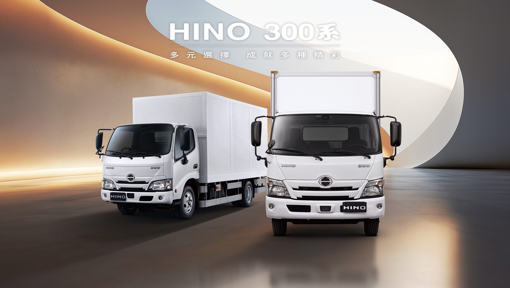
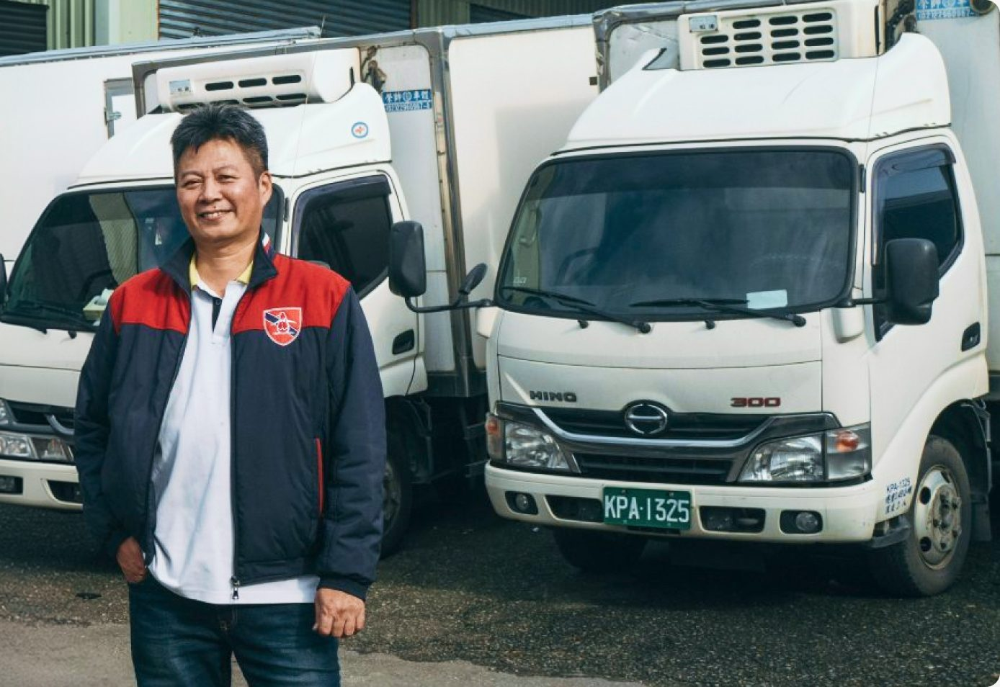

亮點配備與數據
操控
操控進化寬敞的中控台空間，提供多元收納功能及眾多實用性配備，讓開車更輕鬆舒適。


除了傳統手排變速箱外，亦提供自排車型可供選擇。易於操控的自排變速箱，起步、加速更平穩，不熟練手排的駕駛者也可輕易上手，大幅降低工作負擔。

大型彩色螢幕，油耗、里程、保養週期等資訊一目瞭然。

配置多功能資訊顯示幕操作開關，操作更加便利。
節能
節能環保DPR 柴油碳微粒主動濾清系統搭配 SCR 選擇性觸媒還原系統，降低排放汙染。

廢氣通過 DPF 濾清器時吸附黑煙粒狀物，堆積量過高時自動再生或提醒手動再生，降低 PM 汙染物排放。

ECU 偵測引擎排出的廢氣，搭配 AdBlue 適時噴出尿素水，進行化學變化後，達到排氣淨化效果。
安全
安全配備標配 PCS 預警式防護系統、LDWS 車道偏離警示系統、VSC 車輛穩定控制系統。

由車前方毫米波雷達及智能攝影機偵測前方行人或車輛，若系統判斷有碰撞危險時，將發出警報及支援煞車控制，降低碰撞車禍的傷害。

透過車輛前方所搭載的攝影機隨時偵測前方車道線，當行駛中車輛偏離車道線時，系統將會發出警示音以提醒駕駛者注意。偵測車道線，車輛偏離時發出警示音提醒駕駛。

搭載螢幕內嵌視野輔助系統，以 4 分割畫面同時顯示前、後、左、右鏡頭畫面並儲存紀錄。4 分割畫面顯示前後左右鏡頭並儲存紀錄。
煞車與車身穩定控制

主動防止車輪在緊急煞車時鎖死，避免車輛失控。緊急煞車時防止車輪鎖死，避免失控。

有效抑制車輛於濕滑路面起步或加速時，可能發生的輪胎打滑。抑制濕滑路面起步或加速時的輪胎打滑。

車輛偏離路面、轉向過度或不足時，調整動力輸出，主動掌握行車安全。轉向過度或不足時調整動力，維持行車穩定。

因應不同行駛狀況，將前後煞車制動力做適當分配，保障駕駛者、乘客與貨物的最大安全。依行駛狀況分配前後煞車力，提升安全。

根據踩煞車踏板力道及速度主動判斷情況緊急與否，提供最強大的制動力。判斷緊急煞車時，提供最強制動力。

油門作動時只要踩下煞車踏板，行車電腦會啟動煞車優先系統，自動降低動力輸出，使車輛減速。油門與煞車同時踩下時，優先降低動力減速。
性能
大馬力引擎寬座艙手排車型搭載馬力 180PS 引擎，以大馬力支援您的行車需求。

電腦控制柴油直噴引擎、渦輪增壓附中間冷卻器，總排氣量 4,009 c.c.，最大淨扭力達 47.9 kg‧m。
載重
大樑結構全車採用高強度大樑，底盤耐用度高，載貨更平穩、更安全。

內裝
車內空間貼心多元的收納功能與車內照明，實用性大幅提升。


多元收納與車內照明
貼心多元的收納功能與車內照明，實用性大幅提升。＊LED 室內燈為標準座艙車型配備

操控靈活，進出市區巷道不受限。

座艙寬廣、乘駕更舒適；貨台空間大，載貨更多元。
選車比較
選出你的 300 系選噸數、座艙、變速箱，找到對應車型。

規格
規格配備5 / 6.5 / 7.4 / 7.5 / 8 噸，標準座艙/寬座艙、手排/自排多種組合。
噸數
| 車型 | 標準艙手排XZU600L-WFMMVR3 |
|---|---|
| 駕駛艙形式 | 標準座艙/低頂 |
| 重量 | |
| 車輛總重kg | 5,000 |
| 完成車/底盤空重kg | 2,135 |
| 底盤尺寸 | |
| 軸距mm | 2,525 |
| 全長mm | 4,670 |
| 全寬mm | 1,870 |
| 全高mm | 2,015 |
| 引擎 | |
| 引擎型號 | N04C-WN |
| 最大淨馬力ps/rpm | 150 / 2,700 |
| 最大淨扭力kg•m/rpm | 44.9 / 1,300~2,200 |
| 性能 | |
| 最小迴轉半徑mm | 5,500 |
| 底盤 | |
| 變速箱型式 | 5 檔手排 |
| 電氣 | |
| 電瓶V/Ah | 12 / 65 × 2 |
| 發電機V/A | 24 / 80 |
| 選擇配備 | |
| PTO 動力輸出 | 選擇配備 |
| 造型/配備 | |
| 安全配備 | PCS 預警式防護系統（AEBS 緊急煞車輔助系統）、LDWS 車道偏離警示系統、VSC 車輛穩定控制系統、原廠晶片防盜鑰匙（Immobilizer）、數位行車紀錄器 |
| 車型 | 標準艙手排XZU600L-WFMQVR3 | 標準艙自排XZU600L-WFTQVR3 | 寬座艙自排XZU710L-WFTQVR3 | 寬座艙自排XZU720L-WFTQVR3 | 寬座艙手排XZU710L-WFFQWR3 | 寬座艙手排XZU720L-WFFQWR3 |
|---|---|---|---|---|---|---|
| 駕駛艙形式 | 標準座艙/低頂 | 標準座艙/低頂 | 寬座艙 | 寬座艙 | 寬座艙 | 寬座艙 |
| 重量 | ||||||
| 車輛總重kg | 6,500 | 6,500 | 6,500 | 6,500 | 6,500 | 6,500 |
| 完成車/底盤空重kg | 2,160 | 2,200 | 2,480 | 2,500 | 2,455 | 2,475 |
| 底盤尺寸 | ||||||
| 軸距mm | 2,525 | 2,525 | 3,430 | 3,870 | 3,430 | 3,870 |
| 全長mm | 4,670 | 4,670 | 6,135 | 6,750 | 6,135 | 6,750 |
| 全寬mm | 1,870 | 1,870 | 1,995 | 1,995 | 1,995 | 1,995 |
| 全高mm | 2,035 | 2,035 | 2,215 | 2,215 | 2,215 | 2,215 |
| 引擎 | ||||||
| 引擎型號 | N04C-WN | N04C-WN | N04C-WN | N04C-WN | N04C-WP | N04C-WP |
| 最大淨馬力ps/rpm | 150 / 2,700 | 150 / 2,700 | 150 / 2,700 | 150 / 2,700 | 180 / 2,700 | 180 / 2,700 |
| 最大淨扭力kg•m/rpm | 44.9 / 1,300~2,200 | 44.9 / 1,300~2,200 | 44.9 / 1,300~2,200 | 44.9 / 1,300~2,200 | 47.9 / 1,400~2,600 | 47.9 / 1,400~2,600 |
| 性能 | ||||||
| 最小迴轉半徑mm | 5,500 | 5,500 | 5,700 | 6,400 | 5,700 | 6,400 |
| 底盤 | ||||||
| 變速箱型式 | 5 檔手排 | 6 檔自排（附 S 檔序列式手自排） | 6 檔自排（附 S 檔序列式手自排） | 6 檔自排（附 S 檔序列式手自排） | 6 檔手排 | 6 檔手排 |
| 電氣 | ||||||
| 電瓶V/Ah | 12 / 65 × 2 | 12 / 65 × 2 | 12 / 65 × 2 | 12 / 65 × 2 | 12 / 65 × 2 | 12 / 65 × 2 |
| 發電機V/A | 24 / 80 | 24 / 80 | 24 / 80 | 24 / 80 | 24 / 80 | 24 / 80 |
| 選擇配備 | ||||||
| PTO 動力輸出 | 選擇配備 | 選擇配備 | 選擇配備 | 選擇配備 | 選擇配備 | 選擇配備 |
| 造型/配備 | ||||||
| 安全配備 | PCS 預警式防護系統（AEBS 緊急煞車輔助系統）、LDWS 車道偏離警示系統、VSC 車輛穩定控制系統、原廠晶片防盜鑰匙（Immobilizer）、數位行車紀錄器 | |||||
| 車型 | 標準艙手排XZU640L-WFMRVR3 | 標準艙手排XZU650L-WFMRVR3 |
|---|---|---|
| 駕駛艙形式 | 標準座艙/低頂 | 標準座艙/低頂 |
| 重量 | ||
| 車輛總重kg | 7,400 | 7,400 |
| 完成車/底盤空重kg | 2,295 | 2,335 |
| 底盤尺寸 | ||
| 軸距mm | 2,800 | 3,400 |
| 全長mm | 5,155 | 5,965 |
| 全寬mm | 1,880 | 1,880 |
| 全高mm | 2,080（低頂）、2,170（高頂） | 2,170 |
| 引擎 | ||
| 引擎型號 | N04C-WN | N04C-WN |
| 最大淨馬力ps/rpm | 150 / 2,700 | 150 / 2,700 |
| 最大淨扭力kg•m/rpm | 44.9 / 1,300~2,200 | 44.9 / 1,300~2,200 |
| 性能 | ||
| 最小迴轉半徑mm | 5,100 | 6,100 |
| 底盤 | ||
| 變速箱型式 | 5 檔手排 | 5 檔手排 |
| 電氣 | ||
| 電瓶V/Ah | 12 / 65 × 2 | 12 / 65 × 2 |
| 發電機V/A | 24 / 80 | 24 / 80 |
| 選擇配備 | ||
| PTO 動力輸出 | 選擇配備 | 選擇配備 |
| 造型/配備 | ||
| 安全配備 | PCS 預警式防護系統（AEBS 緊急煞車輔助系統）、LDWS 車道偏離警示系統、VSC 車輛穩定控制系統、原廠晶片防盜鑰匙（Immobilizer）、數位行車紀錄器 | |
| 車型 | 寬座艙自排XZU710L-WFTRVR3 | 寬座艙自排XZU720L-WFTRVR3 |
|---|---|---|
| 駕駛艙形式 | 寬座艙 | — |
| 重量 | ||
| 車輛總重kg | 7,500 | — |
| 完成車/底盤空重kg | 2,575 | — |
| 底盤尺寸 | ||
| 軸距mm | 3,430 | — |
| 全長mm | 6,130 | — |
| 全寬mm | 1,995 | — |
| 全高mm | 2,220 | — |
| 引擎 | ||
| 引擎型號 | N04C-WN | — |
| 最大淨馬力ps/rpm | 150 / 2,700 | — |
| 最大淨扭力kg•m/rpm | 44.9 / 1,300~2,200 | — |
| 性能 | ||
| 最小迴轉半徑mm | 5,700 | — |
| 底盤 | ||
| 變速箱型式 | 6 檔自排（附 S 檔序列式手自排） | — |
| 電氣 | ||
| 電瓶V/Ah | 12 / 65 × 2 | — |
| 發電機V/A | 24 / 80 | — |
| 選擇配備 | ||
| PTO 動力輸出 | 選擇配備 | — |
| 造型/配備 | ||
| 安全配備 | PCS 預警式防護系統（AEBS 緊急煞車輔助系統）、LDWS 車道偏離警示系統、VSC 車輛穩定控制系統、原廠晶片防盜鑰匙（Immobilizer）、數位行車紀錄器 | — |
| 車型 | 寬座艙手排XZU710L-WFFSWR3 | 寬座艙手排XZU720L-WFFSWR3 |
|---|---|---|
| 駕駛艙形式 | 寬座艙 | 寬座艙 |
| 重量 | ||
| 車輛總重kg | 8,000 | 8,000 |
| 完成車/底盤空重kg | 2,595 | 2,610 |
| 底盤尺寸 | ||
| 軸距mm | 3,430 | 3,870 |
| 全長mm | 6,135 | 6,750 |
| 全寬mm | 2,055 | 2,055 |
| 全高mm | 2,235 | 2,235 |
| 引擎 | ||
| 引擎型號 | N04C-WP | N04C-WP |
| 最大淨馬力ps/rpm | 180 / 2,700 | 180 / 2,700 |
| 最大淨扭力kg•m/rpm | 47.9 / 1,400~2,600 | 47.9 / 1,400~2,600 |
| 性能 | ||
| 最小迴轉半徑mm | 5,700 | 6,400 |
| 底盤 | ||
| 變速箱型式 | 6 檔手排 | 6 檔手排 |
| 電氣 | ||
| 電瓶V/Ah | 12 / 65 × 2 | 12 / 65 × 2 |
| 發電機V/A | 24 / 80 | 24 / 80 |
| 選擇配備 | ||
| PTO 動力輸出 | 選擇配備 | 選擇配備 |
| 造型/配備 | ||
| 安全配備 | PCS 預警式防護系統（AEBS 緊急煞車輔助系統）、LDWS 車道偏離警示系統、VSC 車輛穩定控制系統、原廠晶片防盜鑰匙（Immobilizer）、數位行車紀錄器 | |
型號
車主故事
清晨四點出車，貨準時到店
每天清晨四點，車主就從果菜市場載滿生鮮出發，一早要跑完市區十多個停靠點，貨一定要在開店前送到。以前開手排，巷子裡走走停停，一趟下來腳都酸了。換成 300 系自排後，起步、加速都很平穩，貨物不容易晃動，長時間駕駛也輕鬆許多。
看完整故事
相關資訊


專人聯繫
專人聯繫想瞭解更多？留下聯絡方式，由專人聯繫您
- 不用跑據點，專人主動與您聯繫
- 依載運需求，推薦合適車型與配置
- 報價、分期與購車優惠一次說明
常見問答
可以分期購車嗎？
可以。和泰提供多種車貸與分期方案，可依預算與營運需求規劃，詳情請洽各地據點業務。
交車要等多久？
依車型、配備與上裝需求不同，一般約需數週，實際交期請以據點報價為準。
可以先試乘再決定嗎？
可以。點選「預約試乘」，或直接聯繫鄰近據點安排試乘。
舊車可以折抵嗎？
可以。據點可協助舊車估價與折抵，評估結果依車況與年份而定。
如何預約試乘？
可點選「預約試乘」填寫資料，或直接聯繫鄰近據點，由專人與您確認試乘時間與地點。
試乘需要準備什麼？
請攜帶有效之相應駕照，實際所需文件請依據點說明為準。
可以指定試乘車型嗎？
可於預約時註明想試乘的車型與噸數，實際可試乘車輛依據點安排為準。
多久需要定期保養？
建議依車主手冊所載之保養週期進廠，實際保養項目可洽服務據點確認。
如何預約保養進廠？
可聯繫鄰近服務據點預約進廠時間，減少現場等候。
保養使用正廠零配件嗎？
HINO 服務據點提供正廠零配件，詳細品項與價格請洽服務據點。
行駛途中故障怎麼辦？
HINO 提供道路救援服務，可撥打客服專線洽詢協助。
新車保固期間多久？
保固期間與範圍依車型及保固條件而定，詳情請參閱「保固條件」或洽詢據點。
哪些項目不在保固範圍內？
消耗性零件、人為因素或未依規定保養所造成之損壞等，依保固條件規定為準。
保固期間一定要回原廠保養嗎？
建議依規定週期於 HINO 服務據點保養，以確保保固權益；詳細規定以保固條件為準。
※ 以上問答為提案示意內容，正式題目與回覆將依客戶提供資料調整。